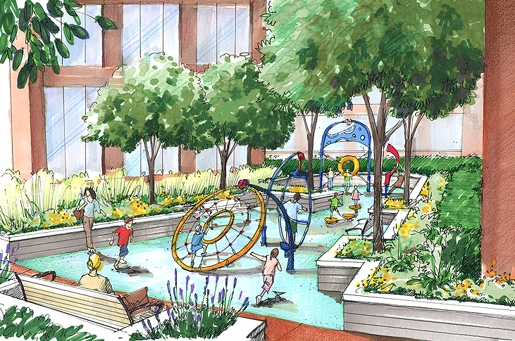
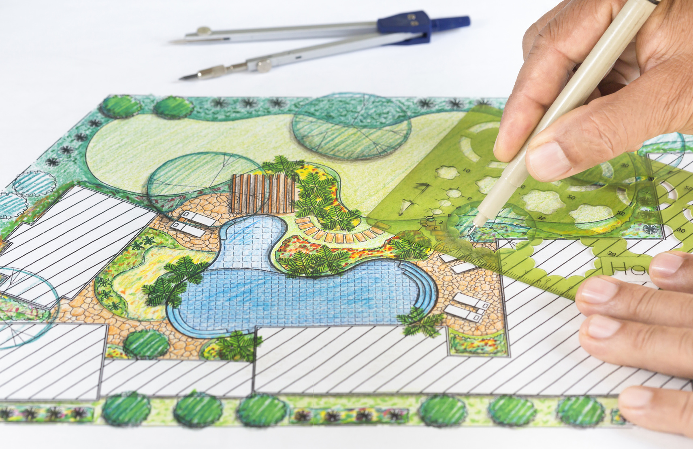

With each project we undertake, establishing our client's vision onto paper is the ultimate goal for this phase. Mining the stories inherent in each site ultimately leads to unique places developed through careful research and discovery.
ABOUT US
WHAT WE DO
We craft beautiful, contextual, and sunstainable landscapes.

We Create
PLACES THAT INFLUENCE
We design places that creates a compelling, communal, environmental, and cultural impact on individuals and communities.
PLACES THAT INSPIRE
We design places that encourage an impassioned and spiritual connection. We regard design to be contextual – responding to its layered history.
PlACES THAT INFORM
Our modus operandi leverages the competence of the entire firm to consistently produce well-informed design.

WHO WE ARE
We are inquisitive designers, zealous artists, and ingenous stewards.
Vasken Verano
Principle, PE RLA ASLA
Vasken is the founder of Gravitas Design; Bringing over a decade of experience as both as a landscape architect and professional civil engineer, Vasken possesses a unique and advantageous outlook that he is able to approach his projects with. Vasken majored in Civil Engineering at Cal Poly Pomona and finished his Masters in Landscape Architecture at Cal Poly Pomona as well.
Christian Manoukian
Associate Principle, RLA ASLA
Christian is one of the co founders of Gravitas Design and has over five years of experience working on numerous projects. With a particular expertise in irrigation design and California native plant horticulture, Christian commands a subset that very few landscape architects acquire. Christian majored in Landscape Architecture at Cal Poly San Luis Obispo.
Lara Chakrian
Senior Associate, RLA
Lara is an experienced landscape architect with a background in psychology; She is able to incorporate principles from psychology into her designs which allows them to be deeply impactful and socially integrative for the community. She majored in Psychology at Azusa Pacific University and recieved her Masters in Landscape Architecture from the University of Southern California.
OUR PROCESS
We seek to cultivate authentic value for our clients.
- CONCEIVE
- DESIGN
- BUILD


Shifting from conceptualization to designing is the next phase; Our firm was founded on the fundamental principles of delivering the finest documentation and craftsmanship. The result? Value and peace of mind to our clients.
As we move into the final phase of bringing the ink and measurements to life, we proactively listen and communicate with our clients as well as work hand in hand with our experienced contractors to ensure the highest level of service.
FREQUENTLY ASKED QUESTIONS
Address the top questions we receive regularly.
As one of the premiere landscape architecture firms in Southern California, we offer a variety of services ranging from the beginning phase of a project with the initial site inventory and analysis, to the later stages of a project such as grading, drainage, and construction management.
We always begin by consulting with our client and understanding what their design need is and how we can solve it. We first concieve their vision and jot down ideas and drawings. After finalizing the conception, we move to designing it up to code and fully drafted complete with 3d renderings ready to be constructed. Finally, we manage the construction of each project to fufill the design plan as intended.
We have been extremely fortunate and grateful to have been apart of designing several notable projects: We have redesigned the quad for UCLA which was our first ever project on a school campus. We have also been at the center of the massive Pershing Square master plan in Downtown Los Angeles. You can find the rest our featured projects in our work section.
With sustinable design being at the forefront of our ethos, our firm seeks to address these modern issues within our design such as water conservation, native planting, carbon sequestering, biodiverse gardening, green rooves, and other principles that we routinely implement.
Our office is located right in the heart of Glendale Califonia. This location gives us an unique oppurtunity to reach and impact the whole of Southern California; One of the most diverse and forward thinking regions in the country.
Yes, all of our landscape architects are required to have completed the California landscape architect registration exam which means all of our architects are board licensed. This ensures the utmost quality and precision in all of our designs and reassurance for our clients.